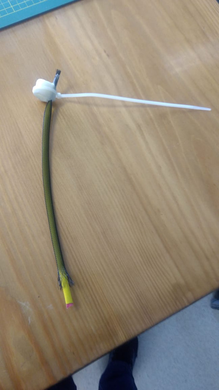
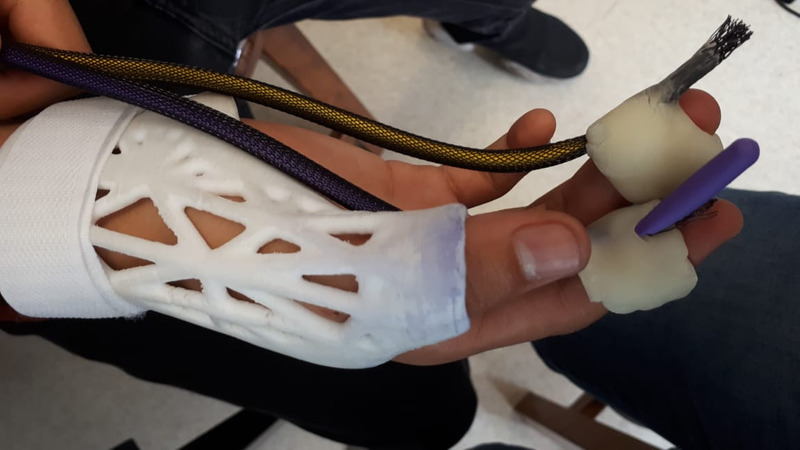

INTEGRACIÓN DE MÓDULOS
ENSAMBLAJE DE LOS SISTEMAS ELÉCTRICOS Y MECÁNICOS DEL PROTOTIPO
Ensamblaje de los músculos de Mckibben con anillos hechos de cerámica en frío con funcionamiento de soporte y enganche de los músculos con los dedos medio e índice.

Cuando se decidió desarrollar los músculos de mckibben, se desarrolló la duda de cómo colocar estos en los dedos, por lo que al conversarlo como equipo hallamos que la mejor opción posible, así como económica es desarrollar dos anillos con cerámica en frío y ensamblarla con cintilla y recubriéndolo con más cerámica en frio. El beneficio de la cerámica en frío es que es resistente, es decir, no se rompe con facilidad. Cuando tengamos el prototipo final se hará la prueba de rigor si es que puede soportar el corte del pollo.
